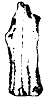
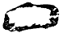
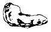
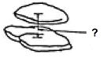

조경기능사 (2007-01-28 기출문제)
1과목: 조경일반
1. 다음 중 실용성과 자연성을 동시에 가지고 있는 형태의 조경양식은?
- 정형식 조경
- 자연식조경
- 절충식 조경
- 기하학식 조경
(정답률: 79%)

2. 중세 수도원 정원에서 사용하지 않은 것은?
- 약초원
- 수반(水盤)
- 과수원
- 원색의 색사
(정답률: 71%)
3. 다음 중 도시화가 진전되면서 도시에 생기는 변화에 대한 설명이 틀린 것은?
- 도시화가 진전되면서 환경오염이 증대되고 있다.
- 도시화가 진전되면서 기온은 상승되고 있다.
- 도시화된 지역이 넓어지면서 도시지역의 강우량은 줄어들었다.
- 도시화 되면서 하천의 범람 횟수는 더 많아 지고 있다.
(정답률: 78%)
4. 조선시대 사대부나 양반계급들이 꾸민 별서정으로 옳은 것은?
- 전주의 한벽루
- 수원의 방화수류정
- 담양의 소쇄원
- 의주의 통군청
(정답률: 85%)
5. 계단폭포, 물 무대, 분수, 정원극장, 동굴 등의 조경 수법이 자장 많이 나타났던 정원은?
- 영국 정원
- 프랑스 정원
- 스페인 정원
- 이탈리아 정원
(정답률: 81%)
6. 주택정원을 설계할 때 일반적으로 고려할 사항이 아닌 것은?
- 무엇보다도 안전 위주로 설계해야 한다.
- 시공과 관리하기가 쉽도록 설계해야 한다.
- 특수하고 귀중한 재료만을 선정하여 설계해야 한다.
- 재료는 구하기 쉬운 것을 넣어 설계한다.
(정답률: 94%)
7. 다음 자연환경 분석 중 자연 형성 과정을 파악하기 위해서 실시하는 분석 내용이 아닌 것은?
- 지형
- 수문
- 토지이용
- 야생동물
(정답률: 54%)
8. 다음 중 초점경관(focal landscape)에 해당되는 설명은?
- 단일 요소의 세부적인 특징으로 미시경관이다.
- 강물이나 계곡 또는 길게 뻗은 도로 같은 것이다.
- 수면에 투영된 구름의 모습이다.
- 주위의 경관요소들이 울타리처럼 자연스럽게 싸고있는 국소적(局所的)경관이다.
(정답률: 54%)
9. 도시공원 및 녹지 등에 관한 법률 상 도시공원 시설의 종류 중 편익시설에 해당되는 것은?
- 관상용식수대
- 야외극장
- 전망대
- 야영장
(정답률: 68%)
10. 영국의 18세기 낭만주의 사상과 관련이 있는 것은?
- 스토우(stowe) 정원
- 분구원(分區園)
- 비큰히드(Birkenhead) 공원
- 베르사이유궁의 정원
(정답률: 63%)
11. 우리나라의 독특한 정원수법인 후원양식이 가장 성행한 시기는?
- 고래시대초엽
- 고려시대 말엽
- 조선시대
- 삼국시대
(정답률: 90%)
12. 다음 중 현대 조경에서 대형 수목의 이식이 가능 하도록 가장 크게 영향을 미친 요인은?
- 민주적인 사고방식
- 건축 재료의 발달
- 급. 배시설의 발달
- 건설기계의 발달
(정답률: 86%)
13. 다음 중 일반적으로 옥상정원 설계 시 일반 조경 설계보다 중요하게 고려할 항목으로 관련이 적은 것은?
- 토양층 깊이
- 방수 문제
- 지주목의 종류
- 하중 문제
(정답률: 84%)
14. 전체적인 수목의 질감이 거친 느낌을 가지고 있는 것은?
- 버즘나무
- 철쭉
- 향나무
- 회양목
(정답률: 75%)
15. 주 보행도로로 이용되는 보행공간의 포장 재료로 선택 시 부적합한 것은?
- 변화가 적은 재료
- 질감이 좋은 재료
- 질감이 거친 재료
- 밝은 색의 재료
(정답률: 76%)
2과목: 조경재료
16. 타일을 용도에 따라 분류한 것이 아닌 것은?
- 모자이크 타일
- 내장 타일
- 외장 타일
- 콘크리트 판
(정답률: 44%)
17. 다음 중 거푸집으로 사용할 때 일반적인 재료로 가장 적합한 것은?
- P.V,C 판
- 내수성 합판
- 유리판
- 콘크리트판
(정답률: 73%)
18. 다음 중 내화성이 가장 약한 암석은?
- 안산암
- 화강암
- 사암
- 응회암
(정답률: 62%)
19. 석재의 가공 방법 순서로 적합한 것은?
- 혹두기 - 정다듬 - 잔다듬 - 도드락다듬 - 물갈기
- 혹두기 - 정다듬 - 도드락다듬 - 잔다듬 - 물갈기
- 혹두기 - 잔다듬 - 정다듬 - 도드락다듬 - 물갈기
- 혹두기 - 잔다듬 - 도드락다듬 - 정다듬 - 물갈기
(정답률: 81%)
20. 다음 목재 중 무른나무(soft wood)에 속하는 것은?
- 참나무
- 향나무
- 미루나무
- 박달나무
(정답률: 75%)
21. 조경재료 중 무생물 재료와 비교한 생물 재료의 특성이 아닌 것은?
- 연속성
- 불변성
- 조화성
- 다양성
(정답률: 88%)
22. 다음 중 봄에 개화하는 정원수가 아닌 것은?
- 백목련
- 매화나무
- 무궁화
- 수수꽃다리
(정답률: 79%)
23. 다음 중 덩굴식물이 아닌 것은?
- 등나무
- 인동
- 송악
- 겨우살이
(정답률: 83%)
24. 분쇄목 우드칩(wood-chip)의 사용 시 효과로 틀린 것은?
- 토양의 미생물 발생억제
- 토양의 경화 방지
- 토양의 호흡증대
- 토양의 수분 유지
(정답률: 81%)
25. 수목식재에 가장 적합한 토양의 구성비(토양 : 수분 : 공기)는?
- 50% : 25% : 25%
- 50% : 10% : 40%
- 40% : 40% : 20%
- 30% : 40% : 30%
(정답률: 91%)
26. 다음 중 1속에서 잎이 5개 나오는 수종은?
- 백송
- 소나무
- 리기다소나무
- 잣나무
(정답률: 82%)
27. 시멘트의 저장에 관한 설명으로 옳은 것은?
- 벽이나 땅바닥에서 30㎝ 이상 떨어진 마루 위에 쌓는다.
- 20포대 이상 포개 쌓는다.
- 유해가스배출을 위해 통풍이 잘 되는 곳에 보관한다.
- 덩어리가 생기기 시작한 시멘트를 우선 사용 한다.
(정답률: 75%)
28. 다음 정원석의 모양 중 입석은?



(정답률: 88%)
29. 다음 중 대기오염에 강한 수목은?
- 은행나무
- 단풍나무
- 백합나무
- 개오동나무
(정답률: 87%)
30. 토양 산도 pH4.0~4.7에서 왕성한 생장을 보이는 수종은?
- 낙엽송
- 단풍나무
- 백합나무
- 개오동나무
(정답률: 74%)
31. 서양 잔디의 설명으로 틀린 것은?
- 그늘에서도 견디는 성질이 있다.
- 주로 뗏장 붙이기에 의해 시공한다.
- 벤트 그라스는 일반적으로 겨울철에 푸르다.
- 자주 깎아 주어야 한다.
(정답률: 74%)
32. 화강석의 크기가 20㎝×20㎝×100㎝일 때 중량은?(단. 화강석의 비중은 평균 2.60이다.)
- 약 50kg
- 약 100kg
- 약 150kg
- 약 200kg
(정답률: 54%)
33. 잎의 모양과 착생 상태에 따른 조경 수목의 분류로 맞는 것은?
- 상록 침엽수 - 후박나무
- 낙엽 침엽수 - 잎갈나무
- 상록 활엽수 - 독일가문비나무
- 낙엽 활엽수 - 감탕나무
(정답률: 45%)
34. 곧은결 판재에 대한 설명으로 옳은 것은?
- 뒤틀림이 심하다.
- 판재 너비의 수축률이 크다.
- 마멸이 불균일하고 수명이 짧다.
- 건조 중에 표면 활력이 덜 생긴다.
(정답률: 64%)
35. 다음 중 양수에 속하는 수종은?
- 향나무
- 독일가문비나무
- 주목
- 아왜나무
(정답률: 62%)
3과목: 조경 시공 및 관리
36. 보도블록 설치 시 충격이나 하중을 흡수하는 역할을 하는 기초공사는?
- 잡석다짐
- 자갈다짐
- 모래 다짐
- 밑창콘크리트 치기
(정답률: 79%)
37. 다음 조경 식물의 주요 해충 중 흡즙성 해충은?
- 깍지벌레
- 독나방
- 오리나무잎벌
- 미끈이하늘소
(정답률: 80%)
38. 가을철 버즘나무 줄기에 잠복소를 설치하는 가장 큰 이유는?
- 추위를 막기 위하여
- 솔나방을 유인하기 위하여
- 미국 흰불나방을 유인 살포하기 위하여
- 수분증발을 억제하기 위하여
(정답률: 22%)
39. 문제복원중 기출문제 내용을 아시는 분께서는 오류신고 버튼을 이용하여 문제 내용 올려 주시면 감사하겠습니다.(3번을 누르시면 정답 처리 됩니다.)
- 복원중
- 복원중
- 복원중
- 복원중
(정답률: 74%)
40. 다음 중 건설장비 분류상 운반 기계가 아닌 것은?
- 덤프트럭
- 모터 그레이더
- 크레인
- 지게차
(정답률: 83%)
41. 자연석 공사 시 돌과 돌 사이에 넣어 붙여 심는것으로 적합하지 않는 수종은?
- 회양목
- 철쭉
- 맥문동
- 향나무
(정답률: 82%)
42. 전정시기에 따른 전정요령 중 설명이 틀린 것은?
- 진달래, 목련 등 꽃나무는 꽃이 충실하게 되도록 개화직전에 전정해야 한다.
- 하계전정 시는 통풍과 일조가 잘되게 하고, 도장지는 제거해야 한다.
- 떡갈나무 묵은 잎이 떨어지고, 새잎이 나올 때가 전정의 적기이다.
- 가을에 강전정을 하면 수세가 저하되어 역효과가 난다.
(정답률: 73%)
43. 다음 중 소나무류를 가해하는 해충이 아닌 것은?
- 솔나방
- 미국흰불나방
- 소나무좀
- 솔잎혹파리
(정답률: 83%)
44. 수목을 옮겨심기 전 일반적으로 뿌리돌림을 실시하는 시기는?
- 6개월 - 1년
- 3개월 - 6개월
- 1년 - 2년
- 2년 - 3년
(정답률: 70%)
45. 조경시공에서 콘크리트 포장을 할 때, 와이어 매쉬(wire mesh)는 콘크리트 하면에서 어느 정도의 위치에 설치하는가?
- 콘크리트 두께의 1/4 위치
- 콘크리트 두께의 1/3 위치
- 콘크리트 두께의 1/2 위치
- 콘크리트의 밑바닥
(정답률: 70%)
46. 주택정원의 공간구분에 있어서 응접실이나 거실 전면에 위치한 뜰로 정원의 중심이 되는 곳이며, 면적이 넓고 양지바른 곳에 위치하는 공간은?
- 앞뜰
- 안뜰
- 작업뜰
- 뒤뜰
(정답률: 82%)
47. 뿌리분의 크기는 일반적으로 근원 지름의 몇 배정도가 적합한가?
- 2 - 3 배
- 4 - 6 배
- 7 - 8 배
- 9 - 10 배
(정답률: 88%)
48. 적벽돌 포장에 관한 설명으로 틀린 것은?
- 질감이 좋고 특유한 자연미가 있어 친근감을 준다.
- 마멸되기 쉽고 강도가 약하다.
- 다양한 포장패턴을 연출할 수 있다.
- 평깔기는 모로 세워깔기에 비해 더 많은 벽돌수량이 필요하다.
(정답률: 74%)
49. 문제복원중 기출문제 내용을 아시는 분께서는 오류신고 버튼을 이용하여 문제 내용 올려 주시면 감사하겠습니다.(4번을 누르시면 정답 처리 됩니다.)
- 복원중
- 복원중
- 복원중
- 복원중
(정답률: 73%)
50. 정원 설계시 잔디 및 초본류의 생육 최소 토심은?
- 15㎝
- 30㎝
- 45㎝
- 60㎝
(정답률: 69%)
51. 크고 작은 돌을 자연 그대로의 상태가 되도록 쌓아 올리는 방법은?
- 견치석 쌓기
- 호박돌 쌓기
- 자연석 무너짐 쌓기
- 평석 쌓기
(정답률: 87%)
52. 다음 수목 중 당년에 자란 가지에서 꽃이 피는 것은?
- 벚나무
- 철쭉류
- 배롱나무
- 명자나무
(정답률: 65%)
53. 다음 중 일반적으로 조경 수목에 밑거름을 시비하는 가장 적합한 시기는?
- 개화 전
- 개화 후
- 장마 직후
- 낙엽진 후
(정답률: 51%)
54. 디딤돌을 놓을 때 돌의 중심으로부터 다음 돌의 중심까지 거리로 적합한 것은?(단, 성인이 천천히 걸을 때를 기준으로 함.)

- 약 15 - 30㎝
- 약 35 - 50㎝
- 약 50 - 70㎝
- 약 70 - 80㎝
(정답률: 73%)
55. 조경 시설물 관리를 위한 연간 작업 계획표를 작성하려 할 때 작업 내용에 포함되지 않은 것은?
- 하자공사
- 안전점검
- 전면도장
- 수관손질
(정답률: 48%)
56. 공사의 실시방식 중 도급방식의 특징으로 옳은 것은?
- 발주자의 업무가 번잡하다.
- 도급 자에게는 경쟁 입찰을 시켜 비교적 경제적일 수 있다.
- 공사의 설계변경 업무가 단순하다.
- 발주자는 임기응변의 조치를 취하기 쉽다.
(정답률: 79%)
57. 등고선에 관한 설명 중 틀린 것은?
- 등고선 상에 있는 모든 점들은 같은 높이로서 등고선은 같은 높이의 점들을 연결한다.
- 등고선은 급경사지에서는 간격이 좁고, 완경사지에서는 넓다.
- 높이가 다른 등고선이라도 절벽, 동굴에서는 교차한다.
- 모든 등고선은 도면 안 또는 밖에서 만나지 않고, 도중에서 소실된다.
(정답률: 76%)
58. 50㎡ 면적에 전면 붙이기로 잔디식재를 하려할 때 필요한 잔디 소요 매수는?(단, 잔디 1매의 규격은 20㎝ × 20㎝ × 3㎝이다.)
- 200 매
- 555 매
- 1250 매
- 1500 매
(정답률: 78%)
59. 생울타리처럼 수목이 대상으로 군식 되었을 때 거름 주는 방법으로 가장 적당한 것은?
- 전면 거름주기
- 방사상 거름주기
- 천공 거름주기
- 선상 거름주기
(정답률: 75%)
60. 다음 중 수목에서 잘라야 할 가지가 아닌 것은?
- 수관 안으로 향한 가지
- 한 부위에서 평행하게 나오는 가지
- 아래로 향한 가지
- 수목의 주지
(정답률: 88%)